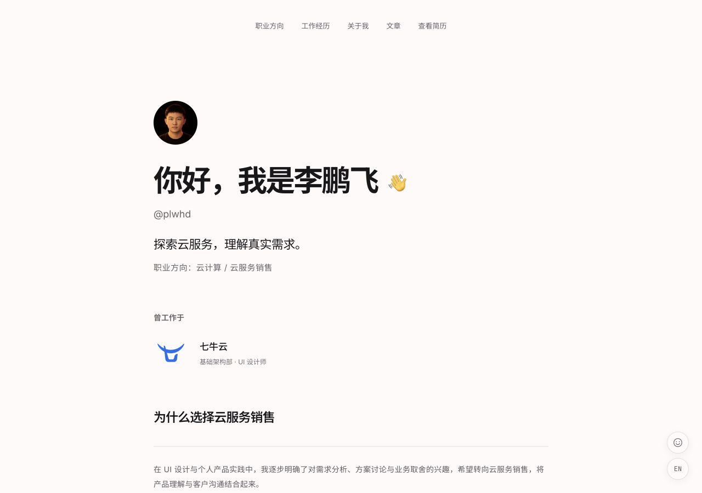

现代极简、偏编辑排版。
视觉语言
- 选择依据：以个人介绍与长文阅读为主，通过文字、留白和浅色背景突出内容。
- 目标气质：清晰、理性、平实；照片与轻量互动保留亲和感。

字体与层级
- 思源黑体简体：应用于中文标题与正文。笔画简化、粗细变化较小，兼顾短句识别与长文阅读。¹
- Montserrat：应用于英文标题。鲜明的轮廓与正文字体区分，突出标题。²
- Inter：应用于正文中的英文与数字。较高的小写字母主体有助于小字号辨认，服务连续阅读。³
- JetBrains Mono：应用于日期、版本、短标签与标语中的英文和数字。简化笔形保持小字号清楚，区分
1、l、I等易混淆字符。⁴ - 层级：主标题突出页面主题，章节标题组织内容，正文保持稳定阅读尺度；文章正文采用常规字重，桌面 16px、手机 15px。
版式与节奏
- 通用布局：居中窄栏，正文左对齐；以细线与留白分区，减少容器包裹。
- 首页：章节之间疏朗，经历条目内部紧凑。
- 文章列表：行式排列；标题、摘要、日期保持一致的排列顺序，便于逐条浏览。
- 文章正文：章节间距大于段落间距，明确主题转换。
- 手机：延续单栏，收紧留白；长标题自然换行，标题与日期上下排列，生活页卡片改为单列。
色彩
- 背景：近白、略偏红，
#FFFAFA。⁵ - 文字：标题与强调文字用近黑
#18181B；正文与摘要用灰紫#625D64；日期与元信息用灰紫#777179。 - 分区：浅灰紫
#F6F3F4用于局部分组与表头，灰白#E4DFE1用于分隔线。 - 操作：近黑
#202023用作主按钮底色，突出主要行动入口。
图像与形状
- 照片：呈现作者形象，保留原色，按比例裁切。
- 控件形状：悬浮入口采用圆形，主按钮采用小圆角。
- 内容容器：文章列表平面排布；生活页以圆角卡片区分独立主题。
标识与应用
Logo V1 · 展翼
- 含义：以抽象羽翼关联 Pengfei，表达探索的意图。
- 形态：朝右上舒展，块面间保留弧形间隙；单色轮廓呼应简洁的页面风格。
- 应用：用于浏览器标签与 Apple 触屏图标，便于在页面外辨认站点。
- 完成时间：2026 年 10 月 3 日定稿并首次应用。
动效与反馈
- 迎接：挥手动画呼应首页“你好”，增加问候的亲和感。
- 反馈：笑脸点击后轻弹并浮起“+1”，确认操作已响应。
- 克制：动效限于问候与操作反馈，正文保持稳定。
注释与参考
- Adobe：思源黑体设计介绍。
- Montserrat：字体作者说明。招牌来源为官方说明；标题识别作用为本站搭配判断。
- Inter：官方字体介绍。
- JetBrains Mono：官方字体介绍。
- W3C：标准命名颜色，Snow 对应
#FFFAFA。 - 中英文字体说明；微软清晰表达指南。
- 历史视觉参考：jmitch.com；yinxulai.com。
留言
由 Disqus 提供。